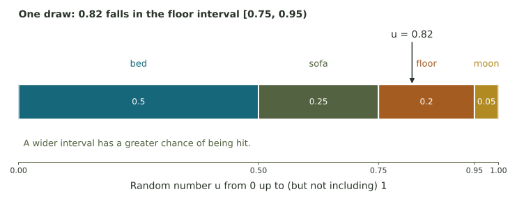

Choosing a next token
Use a small probability distribution to understand complements, sampling, and expected counts in text generation.
Possible next tokens
Consider the unfinished sentence: The cat slept on the … You might finish it with “bed,” “sofa,” or “floor.” A language model can assign different probabilities to possible next pieces of text.
A token is a piece of text used by the model. It may be a word, part of a word, or punctuation. We'll treat each listed word as one token.
For this example, our model assigns probabilities to four possible next tokens.
| Next token | Probability | Equivalent share |
|---|---|---|
| bed | .50 | 50% |
| sofa | .25 | 25% |
| floor | .20 | 20% |
| moon | .05 | 5% |
The probabilities total 1. A 'bed' token is most likely, though any of the four could be selected.
Sampling from the distribution
Imagine dividing the interval from 0 to 1 into four pieces, one for each token. A random number selects whichever interval it lands in.

Calculating probabilities and counts
P(not bed) = 1 − 0.50 = 0.50. Across 200 independent draws from this fixed distribution, the expected number of sofa selections is 200 × 0.25 = 50. The actual count will vary from run to run.
This experiment samples from the distribution, so repeated draws can produce different tokens.
Try repeated draws
Draw 200 tokens and compare the resulting counts with their expected values. Restart to see another sample.
Each draw here uses the same four probabilities. When a model generates a longer response, its probabilities change as tokens are added.
1. Check the whole probability
2. Use a complement
3. Find an expected count
4. Explain why the continuations can differ
Interpreting token probabilities
A high token probability means the model strongly favors that continuation in the current context. It tells us nothing by itself about the truth of a statement.
The next week’s attention application introduces weighted averages, another way models use numerical shares. For more practice now, try random-number intervals and short generation paths.
Further reading: Hugging Face’s generation strategies distinguishes sampling from choosing a most probable next token.